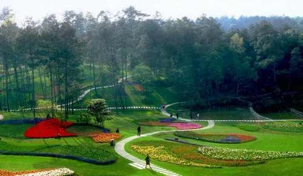

大美蒲江，生态绿色
国家AAAA级景区
成都市最美绿化带
设为首页
联系我们
- 


石象湖景区
仙鹤桥景区
朝阳湖景区

仙鹤桥景区
成佳茶乡旅游景区位于成都市蒲江县成佳镇，距成都市区80公里，川西旅游环线和成雅高速穿境而过。景区生态环境优美，自然资源丰富，森林覆盖率高达80%，是全国休闲农业与乡村旅游示范县的核心示范区、全国环境优美乡镇、四川省乡村旅游特色镇，成都市AAAA级诚信旅游景区。
成佳茶乡旅游景区茶产业优势突出，是国家茶叶标准化种植示范区的核心区、国家级出口茶叶质量安全示范区。现有茶园2.2万亩，其中有机茶园1.2万亩，享有“中国绿茶之乡”的美誉。
成佳茶乡旅游景区旅游资源品类丰富。有生态自然的茶园、姹紫嫣红的千亩海棠园、绚丽缤纷的七彩茶林、风光旖旎的长滩湖、龙凤溪湿地、底蕴厚重的茶马古道、自然宁静的原始森林，吸引了大量游客到茶乡观光、品茗、休闲、度假。
成佳茶乡旅游景区于2010年开始景区建设，以茶为媒，形成三次产业融合发展之势，着力突出景区的自然之美、乡村之美、产业之美，并2011年11月成功创建国家AAA级旅游景区，于2017年1月通过省级生态旅游示范区公示。自景区开始运营以来，取得了初步成果，2016年接待海内外游客约92万人次，实现旅游总收入2.76亿元。
地址：四川省成都市蒲江县
Tel:13350058238
蒲江县
温度：25℃~29℃
风力：小于3级
紫外线：适中
在老318国道一旁，蒲江甘溪镇明月村寂寂无名，而创新型产村相融乡村规划的出炉，如同静水投石，激发了文化传承与新村建设、邛窑旧址与文化项目的联姻，老村落变身国际陶艺村。通过规划引领，让林盘保护、院落打造、乡村旅游，在明月“陶艺村”的载体上，得以整合。实现文化传承、生态保护、农民增收、新型城镇化发展的和谐统一，形成特色鲜明的文化创意产业与乡村旅游互动、产村相融发展新模式，成为成都新型知名乡村旅游目的地和成都新农村建设示范。
今天，你来到明月村，也许一不小心，就会走进四川工艺美术大师李清打造的艺术院子，又或在松林间的服装走秀台，看一场“远远阳光房”的服装展示。一间老屋也许就是一个陶艺博物馆，又或是一个设计师们的沙龙，明月村正在显现出浓浓的文化氛围。[更多]
省级风景名胜区朝阳湖，由三湖一阁组成，即长滩湖、石象湖和飞仙阁。朝阳湖景区位于蒲江县朝阳湖镇长秋山下，湖水面
积80余平方公里。主要景点有：陡峭幽深的“通天洞”，晨曦晚照的“莲花山”，花如覆雪的“木
兰岛”，群鹤飞舞的“仙鹤山”，山花映水的“杜鹃壁”，神秘莫测的“风动石”，鸳鸯戏水的“野鸭湾”等。朝阳湖处处是景，要树依山生，游鱼翔湖底，空中鹰、鹤翩翔。游人来此，如置身漓江画廊之中。[更多]